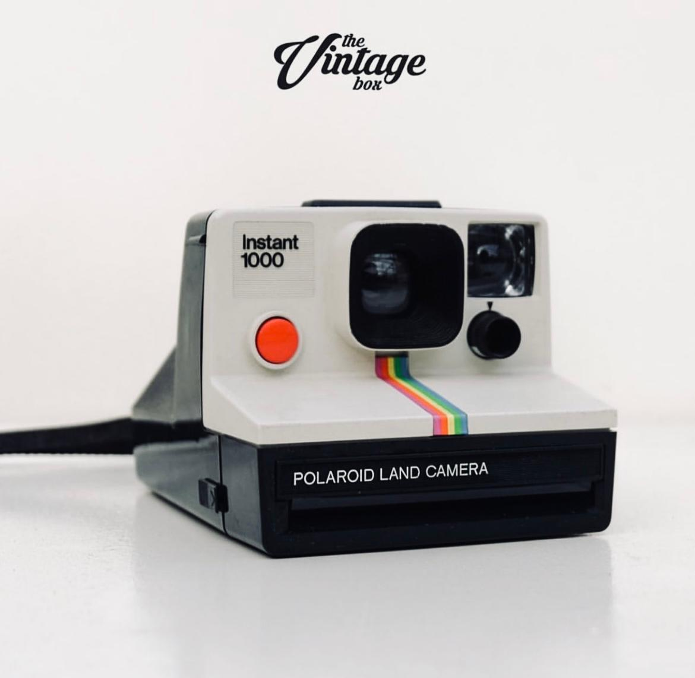
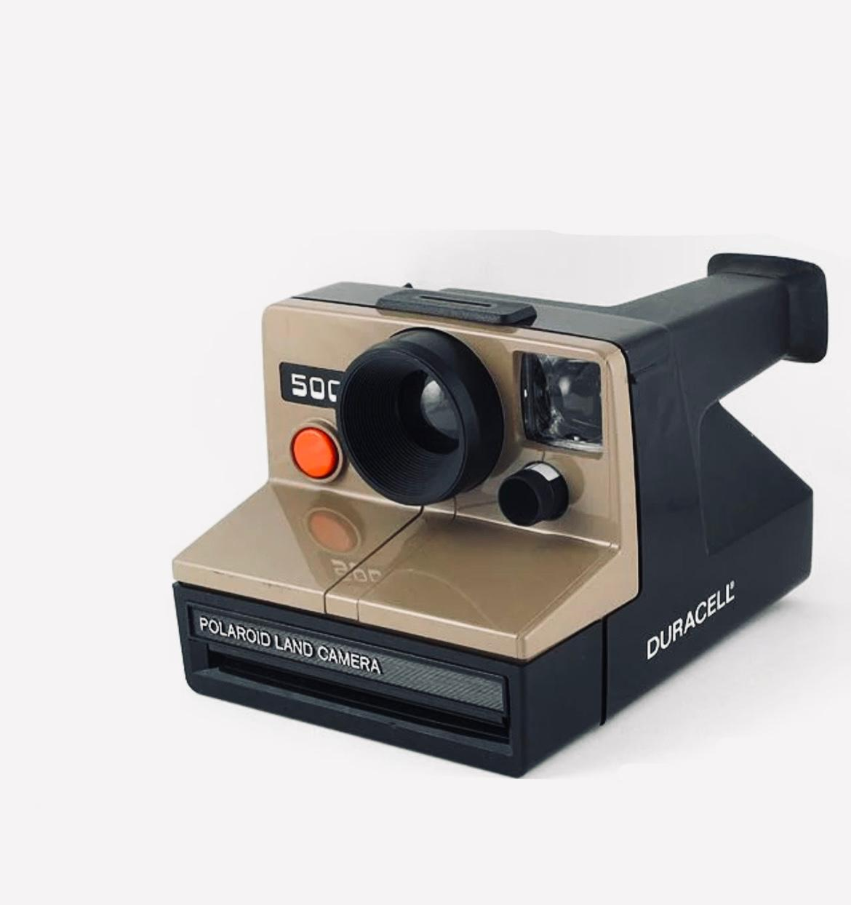
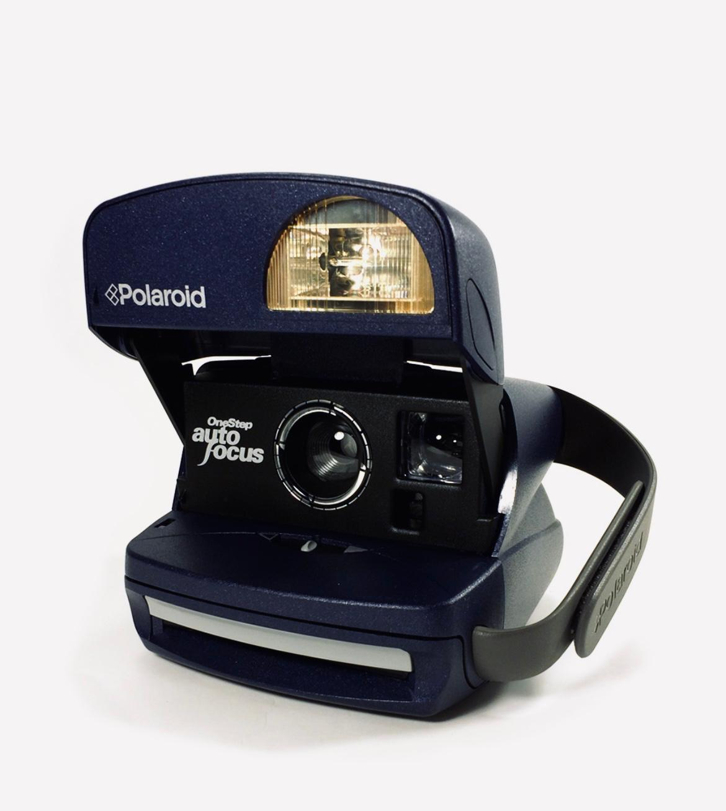

SuperColor 1000(1977)
Price: $150.00
A vintage Polaroid instant camera known for its iconic rainbow stripe design and ease of use, popular in the late 1970s.

Polaroid OneStep Autofocus SE(1986)
Price: $200.00
A classic Polaroid camera featuring automatic focusing and a simple, user-friendly design for quick instant photos.

Polaroid R 500(1992)
Price: $180.00
A retro Polaroid camera known for its robust build and straightforward functionality, ideal for capturing instant memories on the go.